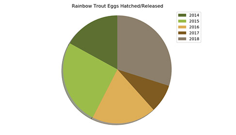
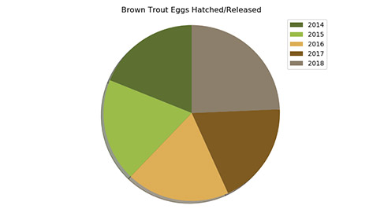
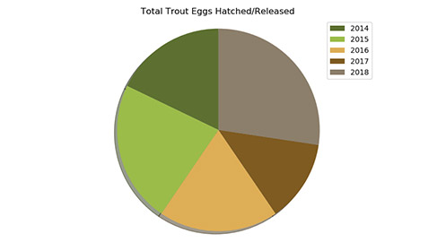
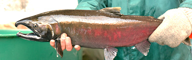
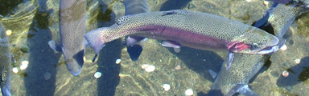

Thames River Anglers Association
header
main contents of site
charts
Did you know...?!
Rainbow trout chart
This chart shows the amount of rainbow trout eggs hatched and released by the TRAA since 2014. As you can see, 2018 was the best year yet for release of rainbow trout. With your support we can make 2019 even better!
Data collected by the TRAA
Data collected by the TRAA
Brown trout chart
This chart shows the amount of brown trout eggs hatched and released by the TRAA since 2014. We have been releasing a steady number of trout for many years and with your help we can continue our mission.
Data collected by the TRAA

Data collected by the TRAA
Total trout chart
This chart shows the total amount of trout eggs hatched and released by the TRAA since 2014. We depend on your support of the TRAA to continue with our most vital projects. Lets make 2019 the best year yet!
Data collected by the TRAA
Data collected by the TRAA
Current & Past TRAA Projects
Current Projects

Here's an overview of what happened over a few weekends in the spring of 2012 when TRAA members and personnel from the Upper Thames River Conservation Authority (UTRCA) waded in for Year 3 of our 5-year Salmonid Tagging and Monitoring Program.
Jon George, an MNR biologist from Thunder Bay who is helping us out with this project, compiled the comparative results of 2010 (Year 1) and 2011 (Year 2) and 2012 (Year 3) in an easy-to-understand report.
(Read More...)
Jon George, an MNR biologist from Thunder Bay who is helping us out with this project, compiled the comparative results of 2010 (Year 1) and 2011 (Year 2) and 2012 (Year 3) in an easy-to-understand report.
(Read More...)

Here's an overview of what happened over a few weekends in the spring of 2012 when TRAA members and personnel from the Upper Thames River Conservation Authority (UTRCA) waded in for Year 3 of our 5-year Salmonid Tagging and Monitoring Program.
Jon George, an MNR biologist from Thunder Bay who is helping us out with this project, compiled the comparative results of 2010 (Year 1) and 2011 (Year 2) and 2012 (Year 3) in an easy-to-understand report.
(Read More...)
Jon George, an MNR biologist from Thunder Bay who is helping us out with this project, compiled the comparative results of 2010 (Year 1) and 2011 (Year 2) and 2012 (Year 3) in an easy-to-understand report.
(Read More...)